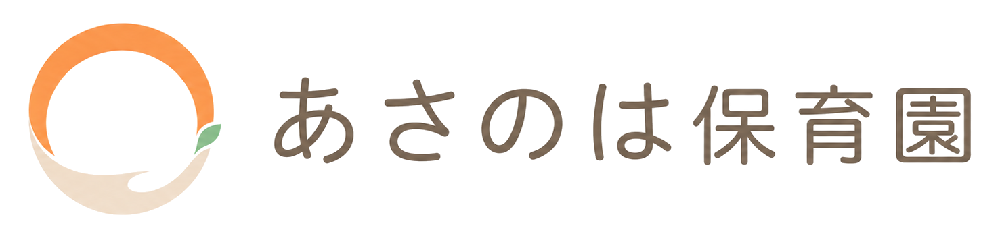
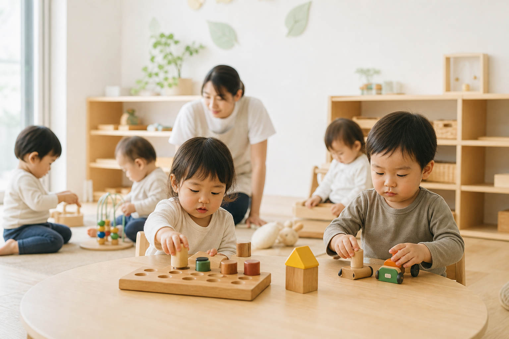

勤務先でも使えるか知りたい
勤務先が共同利用の対象になるか、提携状況が分からない場合も含めて確認できます。

0〜2歳の企業主導型保育園
0〜2歳の大切な時期に、子どもの安心と、働くご家庭の毎日を支える企業主導型保育園です。
子どもの日々の安心と、働くご家庭の朝の負担を支えます。
朝のしたくや体調のことも、毎日の中でゆっくり一緒に確認していけます。

0〜2歳の生活リズムに合わせた、落ち着いた保育環境。
勤務先が未提携の場合や、地域枠の可能性も確認できます。
見学だけでも大丈夫。気になることを短く聞けます。
見学や入園に関するご案内を、少しずつ更新していきます。
入園を検討中の方へ
我が家の利用枠を知りたい方へ
勤務先の提携状況や地域枠、空き状況はご家庭によって異なります。制度の名前より先に、まずは「うちの場合はどうか」を確認できます。
勤務先が共同利用の対象になるか、提携状況が分からない場合も含めて確認できます。
勤務先が未提携の場合も、まずは園へご相談ください。確認できる流れをご案内します。
お住まいの地域や空き状況によって、地域枠で相談できる場合があります。
入園時期がまだ決まっていなくても、見学だけ、空き状況の確認だけでも大丈夫です。
利用枠や空き状況は時期・契約内容によって異なります。詳しくは見学時またはお問い合わせ時にご確認ください。
次にすること
お問い合わせ時点で、すべてが決まっていなくても大丈夫です。分かる範囲のことだけお知らせください。
預けたあとの安心
登園時の機嫌や睡眠、食事のことを、無理のない範囲で一緒に確認します。
手洗いや身支度など毎日の生活の中で、小さな変化にも気づけるように見守ります。
あそび、食事、午睡の流れを、その日の様子に合わせてゆっくり整えていきます。
園での過ごし方や気になったことを、家庭につながる言葉でお伝えします。
Contact
見学だけでも大丈夫です。空き状況や利用できる枠について、分かる範囲でお気軽にご相談ください。
まだ利用時期が決まっていない場合や、勤務先が提携しているか分からない場合もご相談いただけます。